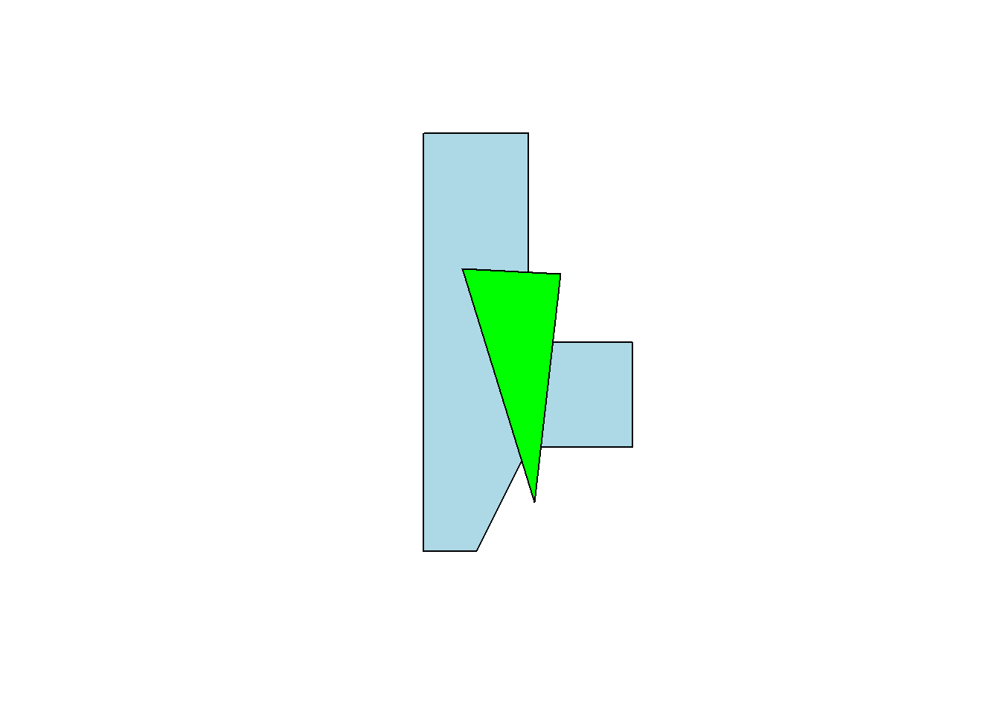

Spatial Basics
R with the sf package makes seamless the handling of spatial data (data that is indexed to, or specific to, spatially-defined locations). We start our GIS unit by showing spatial data for a row contained within the geometry column of a spatial data frame. Each row’s entry in geometry corresponds to the point, line, or polygon that row of data refers to. What we do not show is how those points, lines, or polygons come to be. This spatial basics supplemental details this, briefly.
Vector vs. Raster
There are two ways of storing 2-D mapped spatial data, raster and vector. A vector representation of a 2-D shape is best described as an irregular polygon with points defining vertices. A square plotted in cartesian coordinates is a vector representation. Conversely, a raster image is a grid of cells where each cell is defined as “in” or “out” of the square. Most computer graphics like JPEG and TIFF are raster graphics and each pixel has an assigned color. To make a raster image of a blue square, we’d make a big grid of pixels, and then color some blue based on their location. To make a blue square in vector form, we’d record just the location of the corners and add instructions to color inside the polygon formed by those corners blue.
Vectors are scalable. Rasters are not
Rasters are great for detail, like pixels in a picture, but they do not scale up very well. Vectors are great for things that do need to scale up. They are also smaller and easier to work with when they aren’t trying to replicate photo-realistic images. Vectors can handle curves by recording the properties of the curve (e.g. bezier curves), while rasters have to approximate curves along the grid of cells, so if you want a smooth curve, you need lots of cells.
Geospatial work is almost always done in vectors because (1) it is easier to store data as vectors, and (2) it is easier to manipulate, project, intersect, or connect vector points, lines, and polygons.
We are going to work entirely with vectors today.
Vectors: points, lines, and polygons
Most everything we would want to map can be represented as a point, a line, or a polygon. Points could be the location of power plants in the US, or the location of COVID cases, or the location of major intersections. Lines could be the location of train tracks, the shortest distance between someone’s house and the nearest restaurants, or a major road. Polygons could be county boundaries, landowner’s lot lines, or bodies of water.
We can start by making some points, then turning them into a polygon. We’ll just use arbitrary coordinates for now, but will move into GPS latitude-longitude coordinates shortly. We’ll use st_multipoint to create our points object. It takes a numeric matrix only.
myPoints = tribble(~X, ~Y,
0, 0,
0, 4,
1, 4,
1, 1,
.5, 0,
0, 0)
myPoints = st_multipoint(as.matrix(myPoints))
plot(myPoints)Making polygons
We’ve begun making our first spatial object! Now, we can turn it into a polygon under one condition: the polygon has to “close” in order for R to know which side is the inside. In myPoints, the last point is identical to the first point, so R will “close” it:
plot(st_polygon(list(myPoints)), col = 'darkgreen')That’s just one polylgon. Let’s add another one. When we created the polygon, we put the points object, myPoints, into a list. If we have a list of, say, two points objects, then we’ll get two polygons:
myPoints2 = tribble(~X, ~Y,
1,1,
2,1,
2,2,
1,2,
1,1)
myPoints2 = st_multipoint(as.matrix(myPoints2))
myPolygons = st_polygon(list(myPoints, myPoints2))
plot(myPolygons, col = 'lightblue')Now we can see two polygons. Looking at the structure of the polygons:
str(myPolygons)List of 2
$ : 'XY' num [1:6, 1:2] 0 0 1 1 0.5 0 0 4 4 1 ...
..- attr(*, "dimnames")=List of 2
.. ..$ : NULL
.. ..$ : chr [1:2] "X" "Y"
$ : 'XY' num [1:5, 1:2] 1 2 2 1 1 1 1 2 2 1
..- attr(*, "dimnames")=List of 2
.. ..$ : NULL
.. ..$ : chr [1:2] "X" "Y"
- attr(*, "class")= chr [1:3] "XY" "POLYGON" "sfg"Notice that one of the classes is sfg. This is a sf package-defined spatial object.
Getting points on a plot
One little-known trick in R is super helpful in spatial work. If you plot(myPolygons) in your own R-studio console (so it appears in your “Plots” pane, not knit into your document), you can use click(n) to interactively get \(n\) spatial points in the coordinate system of your plot.
myClicks = click(n = 3)
myClicks = rbind(myClicks, myClicks[1,]) # copy the first point to the last point to "close"
myNewPolygon = st_polygon(list(st_multipoint(myClicks)))
plot(myPolygons, col = 'lightblue')
plot(myNewPolygon, col = 'green', add=T)
Making lines
We could also create a line with our points. I’ll leave off the one point we added to “close” the polygon. Note that the line is colored blue, not the (uncompleted) polygon.
myLine = st_linestring(myPoints[1:4,])
plot(myLine, col = 'blue')